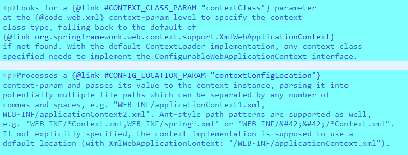
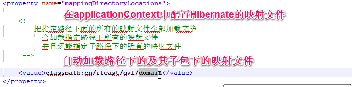

1.整合的时候先写什么？
什么先测试就先写什么
2.spring与Hibernate
1.持久化类和映射文件
2.Hibernate的配置文件
3.在spring容器中配置sessionFactory
4.dao层和service层
步骤：
·建立持久化类·建立配置映射文件·建立配置文件：添加映射文件·在spring容器中，引入SessionFactory`测试SessionFactory·写dao，serveice层·在spring容器中引入dao,service层的内容
·配置spring的生声明式事务处理
·测试service层有没有生成代理对象
3.s2sh整合
1.创建一个web project
2.编码改成UTF-8
3.导入所有的jar包
·数据库的驱动
·struts2的包
·Hibernate的包
·spring的包
4.建立三个src folder
·src 存放源代码
·config 配置文件
·test 测试的源代码
5.config下创建package:hibernate，hibernate里有hibernate.cfg.xml文件
6.在src下创建包及包中的持久化类和映射文件，把映射文件导入到Hibernate.cfg.xml中
7.在config下创建一个package：spring
·applicationContext.xml 总的配置文件
·applicationContext-db.xml spring的声明式事务处理配置
·applicationContext-person.xml person模块
8.在spring容器中引入sessionFactory
9.测试sessionFactory
10.写dao层和service层
11.对service层进行测试
12.写spring的声明式事务处理
13.测试产生的service层的对象是否是代理对象
14.在src下创建一个包，放action
15.把actin放入到spring的配置文件中
16.写struts2的配置文件
struts.xml
struts-person.xml
17.web.xml
18.url测试
4.原理
1.tomcat启动时加载配置文件，初始化spring容器的过程

2.spring的web容器生命周期是整个servlet，应用放了一份在servletContext
OpenSessionInView
filter的链式模式：try catch
web容器和applicationContext(spring容器)的区别：web含有servlet的引用。
5.整合中的配置中的杂记
·在Spring容器中创建 SessionFactory
因为sessionFactoryImpl没有setter方法注入dataSource，不符合spring的特点（需要给spring传入dataSource），所以spring在此基础说那个开发了一个新类LocalSessionFactoryBean<bean id="mySessionFactory" class="org.springframework.orm.hibernate3.LocalSessionFactoryBean"><property name="dataSource" ref="myDataSource"/><property name="hibernateProperties"><value>hibernate.dialect=org.hibernate.dialect.HSQLDialect</value></property></bean>

·典型的dao实现
public class ProductDaoImpl extends HibernateDaoSupport implements ProductDao {
public Collection loadProductsByCategory(String category) throws DataAccessException {
return this.getHibernateTemplate().find(
"from test.Product product where product.category=?", category);
}
}
public Collection loadProductsByCategory(String category) throws DataAccessException {return this.getHibernateTemplate().find("from test.Product product where product.category=?", category);}}
sturts的模型驱动，属性驱动的作用：获取页面数据，以及数据回显。不是为了把其数据传到service层的。要传的话用BeanUtils.copyProperties(..)方法。
6.mysql中主要的存储引擎：数据以什么结构存到磁盘上。
InnoDB：对事务支持的特别好。（5.5之后默认此存储方式）
myisam：读的效率快，但是不支持事务。
7.
典型的业务程序经常会被重复的资源管理代码搞得混乱。Spring提倡一种瞩目而又简洁的解决方案：使用模板化的IoC，诸如基础构建类、回调接口以及使用AOP拦截器。
在典型的Spring应用程序中，很多重要的对象都是JavaBeans：数据访问template、数据访问对象（使用template）、事务管理器、业务逻辑对象（使用数据访问对象和事务管理器）、web视图解析器、web控制器（使用业务服务）等等